Week 3–4（第 3–4 周）
要学的碰撞能量；两个软物体相碰的解析解（降维法、Hertz）；标签对解析解与独立裁判；hydro、hydro++ 与死结，Genesis 中 hydro 实测；网络结构与多接触区耦合；接进引擎、体力法造标签、试训与椭圆骨架；待定事项。
这次要讲的三件事
- hydro++ 为什么不够： 即使给每个物体一张任意的压力场，它也表达不了两件事：同一物体上几处接触之间的相互影响，以及只有两个物体凑在一起才有的量。
- 所以我的模型这样搭： 能量直接由「两表面之间的缝隙 + 两侧合成的硬度」决定，用解析公式算主体，接触之间的相互影响也用公式算，网络只修剩下的一点。
- 下一步： 现有公式只在「物体很厚、表面光滑」时成立。薄层、斜压、两处接触连成一片这些情况，要换一个能统一两头的结构：中间段由层核精确给出，网络只修线弹性管不到的残差 Δ。
要学的量
粗模型只用很少几个数描述一个物体（刚体 6 个，仿射体 12 个），记作 \(z\)。它没有局部变形，两个物体碰上时会互相穿进去。真实物体则在接触处局部凹下去让开。要学的就是这块凹陷里存的弹性能：
\[\color{#c0392b}{U_c(z)=\min_w\ \Pi(\Phi z+\Psi w)-\Pi(\Phi z).}\]
\(\Phi z\) 是粗模型给出的形状，\(\Psi w\) 是叠加在上面的局部变形，\(\Pi\) 是弹性能，\(\min_w\) 在不穿透的条件下取。意思是：粗状态固定后，物体自己找最省能量的凹法避开穿透，多出来的弹性能就是 \(U_c\)；接触力是它对位置的导数。

训练用的标准答案（标签）由 IPC（保证不穿透的接触算法）加精细有限元算出。
hydro++ 为什么不够
hydro++ 是什么
hydro 在每个物体内部预先画好一张压力场：表面为零，越往里越大。两个物体重叠时，在重叠区每一点取两侧压力中较小的那个，积分得到能量：
\[\color{#c0392b}{U=\int_{\text{重叠区}}\min(p_A,p_B)\,dV.}\]

为了公平，我们给它在自身定义内最强的版本 hydro++：每个物体（包括压头）的压力场都可以是任意三维形状，完全由数据拟合。唯一保留的限制来自 hydro 的定义本身：场固定在物体上，不随对手、位置、时间变。这条不能放松：场固定，能量才只由物体当前的位置决定，物体绕一圈回到原处能量也回到原值，仿真才不会凭空多出或少掉能量；原论文证明能量守恒靠的就是这一点。
下面两个例子说明，这个限制让它有两件事做不到。
做不到的第一件事：接触之间的相互影响

同一个块、两个压头 P、Q：① P 单独压；② Q 单独压；③ 一起压。三种情况里压头位置、压深都相同。
- hydro++： 一起压时的重叠区就是两块单独的重叠区拼起来，场又不随对手变，所以能量只能相加：\(U^{\text{hydro}}_③=U^{\text{hydro}}_①+U^{\text{hydro}}_②\)。
- 真实弹性体： 在表面按一下，周围也跟着陷。P 压下去时 Q 那里已经被带低了一点，Q 要压的量变少，能量也变少：\(U_③=c\,(U_①+U_②)\)，\(c<1\)。两个平底压头中心距为半径 4 倍时，用推导出的公式算得 \(c=0.863\)；用边界元（只在物体表面划网格、按「下沉与距离成反比」精确求解接触的数值方法）独立算得 0.861，两者一致。
一个只能相加，一个要打折，不可能三种情况同时对。可以推出：不管场怎么取，至少有一种情况错 \(\dfrac{1-c}{1+c}\)，即 7.49%。实际让三张场都自由拟合去压低最大误差，结果停在 7.56%，和这个下界一致。
推导：hydro++ 只能相加
hydro++ 的能量是重叠区 \(\Omega\) 上每一小块能量 \(e\) 之和：
\[U^{\text{hydro}}=\int_\Omega e\,dV.\]
两个压头离得开，一起压时的重叠区由两块互不相交的部分组成：
\[\Omega_③=\Omega_①\cup\Omega_②,\qquad \Omega_①\cap\Omega_②=\varnothing.\]
场固定在物体上，重叠区里每一点的 \(e\) 在 ③ 与在 ①（或 ②）中相同。积分区域拆成两块：
\[U^{\text{hydro}}_③=\int_{\Omega_①}e\,dV+\int_{\Omega_②}e\,dV=U^{\text{hydro}}_①+U^{\text{hydro}}_②.\]
推导：平底的 c
条件：表面一点施力 \(F\)，距离 \(r\) 处下沉 \(F/(\pi E^*r)\)（\(E^*\) 是有效硬度）；单个半径 \(a\) 的平底，力与压深的关系是 \(F_1=2E^*a\,\delta\)。
-
力为 \(F\) 时，平底自己要压的深度：
\[\delta_e=\frac{F}{2E^*a}.\]
-
两个平底同时压到 \(\delta\)，每个受力 \(F\)。每个的压深 = 自己压的 + 对方带下去的：
\[\delta=\frac{F}{2E^*a}+\frac{F}{\pi E^*r}.\]
-
提出 \(\dfrac{F}{2E^*a}\)：
\[\delta=\frac{F}{2E^*a}\Big(1+\frac{2a}{\pi r}\Big).\]
-
两边乘 \(2E^*a\)，再除以 \(1+\dfrac{2a}{\pi r}\)：
\[F=\frac{2E^*a\,\delta}{1+\dfrac{2a}{\pi r}}.\]
-
平底的力与压深成正比，压入过程中压深记作 \(\delta'\)，力为 \(F\delta'/\delta\)，压到 \(\delta\) 存的能量：
\[U=\int_0^\delta\frac{F}{\delta}\,\delta'\,d\delta'=\frac12F\delta.\]
-
① 与 ② 各存 \(\tfrac12F_1\delta\)，③ 里两个平底各存 \(\tfrac12F\delta\)，压深相同：
\[c=\frac{U_③}{U_①+U_②}=\frac{2\cdot\tfrac12F\delta}{2\cdot\tfrac12F_1\delta}=\frac{F}{F_1}=\frac{2E^*a\delta\big/\big(1+\frac{2a}{\pi r}\big)}{2E^*a\delta}=\frac{1}{1+\dfrac{2a}{\pi r}}.\]
推导：误差下界
-
设三种情况的相对误差都不超过 \(\varepsilon\)。对 ① 是
\[(1-\varepsilon)\,U_①\le U^{\text{hydro}}_①\le(1+\varepsilon)\,U_①,\]
② 与 ③ 同样。
-
①、② 取下限相加：
\[(1-\varepsilon)(U_①+U_②)\le U^{\text{hydro}}_①+U^{\text{hydro}}_②.\]
-
右边用 hydro++ 只能相加 \(U^{\text{hydro}}_①+U^{\text{hydro}}_②=U^{\text{hydro}}_③\)，再对 ③ 取上限并代入 \(U_③=c(U_①+U_②)\)：
\[(1-\varepsilon)(U_①+U_②)\le U^{\text{hydro}}_③\le(1+\varepsilon)\,c\,(U_①+U_②).\]
-
两边除以 \(U_①+U_②>0\)：
\[1-\varepsilon\le c+c\,\varepsilon.\]
-
移项：
\[1-c\le\varepsilon\,(1+c)\ \Longrightarrow\ \varepsilon\ge\frac{1-c}{1+c}.\]
做不到的第二件事：没见过的物体组合
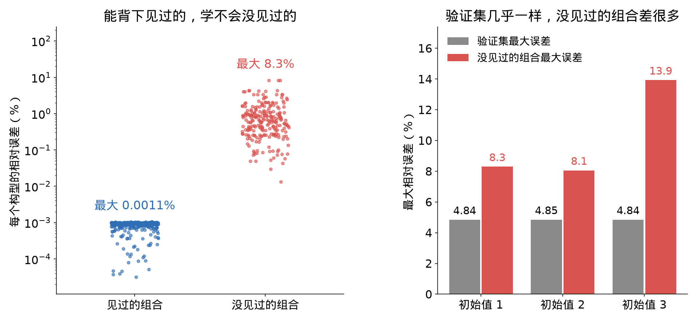
15 个形状、硬度各不相同的物体，两两配对互压，答案用解析公式算。拿其中 68 对拟合每个物体的场、10 对用来挑模型，再测另外 24 对：测试里每个物体都见过，只是这种组合没见过。

- 见过的组合：误差约 0.001%，几乎完全背下来了。
- 没见过的组合：最大误差 8%–14%，而且换个初始值重新拟合，这个数就变，说明数据定不住这些组合的能量。
原因在第 3.1 节：真实答案由「两表面之间的缝隙」和「两侧合成的硬度」决定，这两个量都要两个物体凑在一起才有。hydro++ 每个物体各管各的场，拼不出它们，只能背。
由此得到的设计要求
- 能量要直接由「缝隙 + 合成硬度」决定，而不是由每个物体各自的属性拼起来；
- 同一物体上几处接触之间要有相互影响。
另外，hydro 每一点只看自己压多深、不受旁边影响。这种行为对厚物体是错的，对很薄的层却是对的（第 5 节会用到）。
我的软–软模型
按上面两条要求搭：先用解析公式算能量的主体（下文称骨架），网络只修骨架和真实之间剩下的一点。
两个软体 = 一个刚体压一块软平面
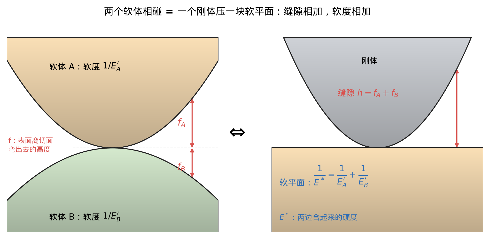
当接触区比物体小得多、变形小、无摩擦时，两个软体相碰，在数学上等价于：
- 一个刚体，形状是两表面之间的缝隙 \(h=f_A+f_B\)（两个表面各自弯离公共切平面的高度之和）；
-
压一块软平面，硬度是合成模量 \(E^*\)，两侧的软度相加：
\[\color{#c0392b}{\frac1{E^*}=\frac{1-\nu_A^2}{E_A}+\frac{1-\nu_B^2}{E_B}\qquad(E\text{ 杨氏模量},\ \nu\text{ 泊松比}).}\]
所以答案只取决于 \(h\) 和 \(E^*\)，正好满足第一条要求。
推导：两个软体 → 刚体压软平面
- 两侧受同一个压力 \(p(\mathbf x)\)（作用与反作用）。
-
每侧的下沉（Boussinesq 解）： 对 \(i=A,B\)，
\[u_i(\mathbf x)=\frac{1}{E_i'}\cdot\frac1\pi\int\frac{p(\mathbf x')}{|\mathbf x-\mathbf x'|}\,d\mathbf x',\qquad E_i'=\frac{E_i}{1-\nu_i^2}.\]
在一点按一下，周围都跟着陷，陷的量与距离成反比；各处的下陷直接相加，就是这个积分。两侧的积分一样，只差系数 \(1/E_i'\)（软度）。
-
贴合条件： 两物体远处推近 \(\delta\)（压深）。不变形时每处会穿入 \(\delta-h\)，实际两侧各凹一点，合起来正好让出来：
\[u_A(\mathbf x)+u_B(\mathbf x)=\delta-h(\mathbf x).\]
-
合并： 第 2 步对 A、B 各写一次，代入第 3 步：
\[\frac{1}{E_A'}\cdot\frac1\pi\int\frac{p(\mathbf x')}{|\mathbf x-\mathbf x'|}\,d\mathbf x'+\frac{1}{E_B'}\cdot\frac1\pi\int\frac{p(\mathbf x')}{|\mathbf x-\mathbf x'|}\,d\mathbf x'=\delta-h.\]
提出公共的积分：
\[\Big(\frac1{E_A'}+\frac1{E_B'}\Big)\cdot\frac1\pi\int\frac{p(\mathbf x')}{|\mathbf x-\mathbf x'|}\,d\mathbf x'=\delta-h.\]
-
记 \(1/E^*=1/E_A'+1/E_B'\)：
\[\frac{1}{E^*}\cdot\frac1\pi\int\frac{p(\mathbf x')}{|\mathbf x-\mathbf x'|}\,d\mathbf x'=\delta-h,\]
就是「形状为 \(h\) 的刚体压硬度为 \(E^*\) 的平面」的方程。
降维法：三维接触变成一排独立弹簧

三维里每一点的下沉都受所有点的压力影响，直接解很麻烦。Popov 的降维法证明，对轴对称的缝隙 \(h(r)\)（绕接触中心转一圈形状不变，只随离中心的距离 \(r\) 变），先换算出一条一维的等效轮廓
\[\color{#c0392b}{g(x)=|x|\int_0^{|x|}\frac{h'(r)}{\sqrt{x^2-r^2}}\,dr,}\]
再用形状为 \(g\) 的刚体去压一排互不相干的弹簧（每单位长度刚度 \(E^*\)），得到的力和能量与三维精确解完全相同：
\[\color{#c0392b}{\begin{aligned}&g(a)=\delta,\qquad F=2E^*\int_0^a\big(\delta-g\big)dx,\\&U_0=E^*\int_0^a\big(\delta-g\big)^2dx.\end{aligned}}\]
\(\delta\) 是压深，\(a\) 是接触边缘（压缩量为零的那根弹簧）。
这个形式有两条自带的性质：力严格等于能量的导数；越压越硬，刚度 \(dF/d\delta=2aE^*\) 随接触变宽而变大。代入球的缝隙 \(h=r^2/(2R)\)，得到的正是 Hertz：\(U_H=\tfrac{8}{15}E^*\sqrt R\,\delta^{5/2}\)。
推导：降维法
第一步：平底的解。 半径 \(\tilde a\) 的平底压入 \(\delta\)，力和平底外 \(r\) 处的下沉分别为
\[F_{\text{平底}}=2E^*\tilde a\,\delta,\qquad w(r)=\frac{2\delta}{\pi}\arcsin\frac{\tilde a}{r}\quad(r>\tilde a).\]
第二步：把一般压入拆成一串平底。 接触半径为 \(\tilde a\) 时再多压 \(d\tilde\delta\)，相当于半径 \(\tilde a\) 的平底多压 \(d\tilde\delta\)。记压深与接触半径的关系为 \(\tilde\delta=g(\tilde a)\)，则 \(d\tilde\delta=g'(\tilde a)\,d\tilde a\)，最后 \(\delta=g(a)\)。各步的力相加：
\[F=\int_0^a2E^*\tilde a\,g'(\tilde a)\,d\tilde a.\]
分部积分：
\[F=2E^*\Big[\tilde a\,g(\tilde a)\Big]_0^a-2E^*\int_0^ag(\tilde a)\,d\tilde a.\]
代入 \(g(a)=\delta\)，上下限处的项为 \(a\,\delta-0\)：
\[F=2E^*a\,\delta-2E^*\int_0^ag(\tilde a)\,d\tilde a.\]
把 \(a\,\delta\) 写成 \(\int_0^a\delta\,dx\)，合并：
\[F=2E^*\int_0^a\big(\delta-g(x)\big)dx.\]
第三步：用边缘的贴合条件定出 \(g\)。 各步在 \(r=a\) 处的下沉相加，应等于那里要让出的量 \(\delta-h(a)\)：
\[\delta-h(a)=\frac2\pi\int_0^a\arcsin\frac{\tilde a}{a}\;g'(\tilde a)\,d\tilde a.\]
分部积分，\(\dfrac{d}{d\tilde a}\arcsin\dfrac{\tilde a}{a}=\dfrac{1}{\sqrt{a^2-\tilde a^2}}\)：
\[\frac2\pi\int_0^a\arcsin\frac{\tilde a}{a}\,g'(\tilde a)\,d\tilde a=\frac2\pi\Big[\arcsin\frac{\tilde a}{a}\,g(\tilde a)\Big]_0^a-\frac2\pi\int_0^a\frac{g(\tilde a)}{\sqrt{a^2-\tilde a^2}}\,d\tilde a.\]
边界项：\(\tilde a=a\) 时 \(\arcsin1=\pi/2\)、\(g(a)=\delta\)，\(\tilde a=0\) 时为 0，所以边界项等于 \(\delta\)。代回，两边消去 \(\delta\)：
\[h(a)=\frac2\pi\int_0^a\frac{g(\tilde a)}{\sqrt{a^2-\tilde a^2}}\,d\tilde a.\]
这对每个 \(a\) 都成立，是关于 \(g\) 的 Abel 积分方程。下面解出 \(g\)。
第三步续：解 Abel 方程。 两边乘 \(\dfrac{r}{\sqrt{x^2-r^2}}\)（把上式的 \(a\) 改记为 \(r\)），对 \(r\) 从 0 积到 \(x\)：
\[\int_0^x\frac{r\,h(r)}{\sqrt{x^2-r^2}}\,dr=\frac2\pi\int_0^x\frac{r}{\sqrt{x^2-r^2}}\int_0^r\frac{g(s)}{\sqrt{r^2-s^2}}\,ds\,dr.\]
交换积分次序（\(0\le s\le r\le x\)）：
\[\int_0^x\frac{r\,h(r)}{\sqrt{x^2-r^2}}\,dr=\frac2\pi\int_0^xg(s)\int_s^x\frac{r\,dr}{\sqrt{(x^2-r^2)(r^2-s^2)}}\,ds.\]
内层令 \(u=r^2\)，\(r\,dr=\tfrac12du\)：
\[\int_s^x\frac{r\,dr}{\sqrt{(x^2-r^2)(r^2-s^2)}}=\frac12\int_{s^2}^{x^2}\frac{du}{\sqrt{(x^2-u)(u-s^2)}}=\frac12\cdot\pi.\]
所以
\[\int_0^x\frac{r\,h(r)}{\sqrt{x^2-r^2}}\,dr=\int_0^xg(s)\,ds.\]
左边对 \(r\) 分部积分（\(\dfrac{d}{dr}\big(-\sqrt{x^2-r^2}\big)=\dfrac{r}{\sqrt{x^2-r^2}}\)）：
\[\begin{aligned}\int_0^x\frac{r\,h(r)}{\sqrt{x^2-r^2}}\,dr&=\Big[-h(r)\sqrt{x^2-r^2}\Big]_0^x+\int_0^xh'(r)\sqrt{x^2-r^2}\,dr\\&=x\,h(0)+\int_0^xh'(r)\sqrt{x^2-r^2}\,dr.\end{aligned}\]
接触中心缝隙为零，\(h(0)=0\)：
\[\int_0^xg(s)\,ds=\int_0^xh'(r)\sqrt{x^2-r^2}\,dr.\]
两边对 \(x\) 求导，右边上限处 \(\sqrt{x^2-x^2}=0\)：
\[g(x)=\int_0^xh'(r)\,\frac{x}{\sqrt{x^2-r^2}}\,dr=x\int_0^x\frac{h'(r)}{\sqrt{x^2-r^2}}\,dr.\]
\(g\) 关于 \(x\) 对称，写成 \(|x|\) 就是上面 \(g(x)\) 的定义式。
第四步：能量。 对 \(U_0=E^*\int_0^a(\delta-g)^2dx\) 求导，上限 \(a\) 也随 \(\delta\) 变：
\[\frac{dU_0}{d\delta}=E^*\big(\delta-g(a)\big)^2\frac{da}{d\delta}+E^*\int_0^a2\big(\delta-g(x)\big)dx.\]
上限处 \(\delta-g(a)=0\)，边界项消失：
\[\frac{dU_0}{d\delta}=2E^*\int_0^a\big(\delta-g(x)\big)dx=F.\]
又 \(\delta=0\) 时 \(U_0=0\)，所以它就是弹性能。
推导：越压越硬
对 \(F=2E^*\int_0^a(\delta-g)\,dx\) 求导，上限 \(a\) 随 \(\delta\) 变：
\[\frac{dF}{d\delta}=2E^*\big(\delta-g(a)\big)\frac{da}{d\delta}+2E^*\int_0^a1\,dx.\]
因为 \(\delta=g(a)\)，第一项为零：
\[\frac{dF}{d\delta}=2aE^*.\]
直观地说：再压一点，接触区里每根弹簧都多压一点，多出来的力是 \(E^*\cdot2a\cdot\Delta\delta\)。
推导：球 → Hertz
缝隙。 半径 \(R_i\) 的球，离接触中心水平距离 \(r\) 处比最低点高 \(f_i\)。由勾股定理
\[r^2+(R_i-f_i)^2=R_i^2\ \Longrightarrow\ r^2=2R_if_i-f_i^2.\]
略去高阶小量 \(f_i^2\)，得 \(f_i\approx r^2/(2R_i)\)。两侧相加：
\[h=\frac{r^2}{2R_A}+\frac{r^2}{2R_B}=\frac{r^2}{2R},\qquad\frac1R=\frac1{R_A}+\frac1{R_B}.\]
等效轮廓。 \(h'(r)=r/R\)，代入：
\[g(x)=\frac{|x|}{R}\int_0^{|x|}\frac{r}{\sqrt{x^2-r^2}}\,dr=\frac{|x|}{R}\Big[-\sqrt{x^2-r^2}\Big]_0^{|x|}=\frac{|x|}{R}\cdot|x|=\frac{x^2}{R}.\]
接触半径。 由 \(g(a)=\delta\)：
\[\frac{a^2}{R}=\delta\ \Longrightarrow\ a=\sqrt{R\delta}.\]
力。
\[F=2E^*\int_0^a\Big(\delta-\frac{x^2}{R}\Big)dx=2E^*\Big(a\delta-\frac{a^3}{3R}\Big).\]
代入 \(a=\sqrt{R\delta}\)，\(a^3/R=\sqrt R\,\delta^{3/2}\)、\(a\delta=\sqrt R\,\delta^{3/2}\)：
\[F=2E^*\Big(\sqrt R\,\delta^{3/2}-\frac13\sqrt R\,\delta^{3/2}\Big)=\frac43E^*\sqrt R\,\delta^{3/2}.\]
能量。 力对压深积分（\(s\) 是压入过程中的压深）：
\[U_H=\int_0^\delta\frac43E^*\sqrt R\,s^{3/2}\,ds=\frac43E^*\sqrt R\cdot\frac25\delta^{5/2}=\frac{8}{15}E^*\sqrt R\,\delta^{5/2}.\]
不轴对称时：椭圆接触
如果接触点上两个方向弯曲程度不同（比如球压在游泳圈内圈：沿管子方向凸，沿圆环方向凹），缝隙就不是轴对称的，接触区是椭圆，降维法不能直接用。

这种情况 Hertz 有精确解（椭圆 Hertz）。骨架的做法是：先取一个面积相同的等效圆，用降维法算；再乘一个只取决于「椭圆有多扁」的精确因子 \(F_U\)，补上椭圆和圆的差别。圆形时这个因子等于 1，所以不需要分圆和椭圆两套算法。如果不乘这个因子、直接把椭圆当圆算，会少算能量：数据里最扁的构型（环面内圈，两个方向的曲率差 3 倍）少算 2.4%。
\[\color{#c0392b}{R_e=\frac{1}{\sqrt{c_1c_2}},\qquad F_U=\frac{U_{\text{椭圆 Hertz}}}{\tfrac{8}{15}E^*\sqrt{R_e}\,\delta^{5/2}}.}\]
\(c_1\)、\(c_2\) 是两个主方向上的合成曲率（同一方向上两侧的曲率相加），\(R_e\) 是等效圆的半径。\(F_U\) 是椭圆 Hertz 的精确能量除以按这个等效圆算的 Hertz 能量；它只取决于 \(c_1/c_2\)，和压深、硬度都无关。骨架就是把等效圆的降维法能量乘上 \(F_U\)。
网络修什么
公式在理想条件下精确，但真实情况总会偏离一点。最明显的是压头本身也软的时候（表中「标签 ÷ Hertz」，等于 1 表示公式完全准）：
| 压头 / 块的杨氏模量 | 标签 ÷ Hertz |
|---|---|
| 1e8 / 1e5（压头几乎刚） | 1.00–1.01 |
| 1e5 / 1e6（软压头压硬块） | 0.98–0.99 |
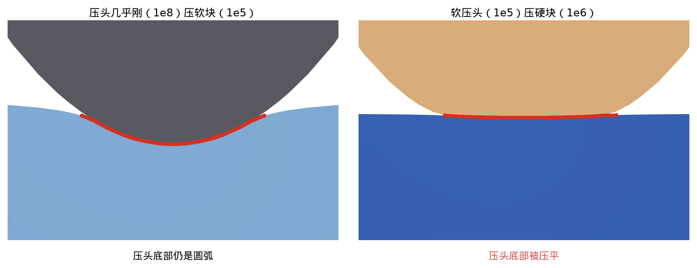
压头一软，被压扁的变成本来就弯的那一侧，公式的「变形小」前提就不太成立，偏了 1%–2%。而合成硬度相同时，软的是弯的一侧还是平的一侧，结果不一样，所以网络要分别知道两侧各自的软硬和弯曲。

举个例子：软压头压硬一些的块。 下面是训练数据里真实的一行，看网络每个输入具体取什么值。

- 压头底面是半径 \(R=1\) 的球冠，球面到离中轴 \(l=0.6\) 处为止；块的上表面是平的，块看成无限大。
- 压头 \(E=10^5\)，块 \(E=10^6\)，泊松比都是 0.3。压深 0.013，这时接触半径 \(a=0.111\)。
- 网络在接触区里每个位置 \(t\) 各算一次；表里列 \(t=0\)、\(a/2\)、\(a\) 三处的取值，两侧的量写成「压头 / 块」。
| 输入 | 例子里的值 | 是什么 | 为什么网络需要它 |
|---|---|---|---|
| 位置 \(10t/R\) | 0 → 0.555 → 1.11 | 离接触中心多远，用球半径量 | 修正随位置变：中心保持公式原样，越往外改得越多 |
| 扁度 \(e\) | 0 | 两侧合起来的缝隙，在两个主方向上弯曲程度之比的对数 | 接触区越扁，按等面积圆算的误差越大。球压平面两个方向一样，所以是 0；上一节环面内圈那种情况是 \(\ln 3\approx 1.10\) |
| 方向 1 曲率占比 | 1 / 0 | 这个方向上合起来的弯曲，有多大比例来自这一侧 | 弯的是哪一侧，结果不一样。块是平的，弯曲全在压头上 |
| 方向 2 曲率占比 | 1 / 0 | 另一个主方向上的同一个量 | 两个方向可以各不相同（比如环面）；这里两个方向一样 |
| 软度占比 \(\sigma\) | 0.909 / 0.091 | 合起来的软度 \(1/E^*\) 有多大比例来自这一侧 | 软的是哪一侧，结果不一样。压头软 10 倍，占了九成多 |
| 泊松比 \(\nu\) | 0.3 / 0.3 | 材料被压时往旁边胀出多少 | 决定物体被压扁的方式 |
| 到边缘的距离 \(t/l\) | 0 → 0.093 → 0.185 / 0 | 当前位置离这一侧球面的边缘有多近 | 离边缘越近，「表面一直往外延伸」这个前提越偏。块看成无限大，这一项是 0 |

- 两组输入对调再算一遍取平均，所以哪一侧叫「压头」、哪一侧叫「块」，结果都一样。
- 两个主方向目前是按弯曲大小排序、没有对称化：两侧软硬不同、合起来又接近圆的接触（比如十字交叉的两根杆），在两个方向弯曲程度相同的那一点，能量会跳 0.73%。下一版二维网络把输入改成两个方向对调后不变的形式来解决。
- 这一行里斜率乘数从中心的 1，到 \(a/2\) 处 1.043，再到边缘 1.078：外圈调陡了，正是下面说的「压头软时外圈调陡、能量降下来」。
网络的做法： 在等效轮廓 \(g\) 的每个位置上，给它的斜率乘一个接近 1 的正数。比如压头软、自己会被压扁，网络就把轮廓外圈调陡一点，接触区变窄，能量随之降下来。

框图里每个箭头的公式（缝隙、合成硬度到等效轮廓，见第 3.1、3.2 节和上面的椭圆因子；这里接着往下写）：
网络的输入。 每一侧 \(s\)（压头、块各一组）：
\[\color{#c0392b}{\Big(\frac{10\,t}{R_e},\ \ e=\ln\frac{c_{\max}}{c_{\min}}\Big),\qquad\Big(\frac{c_{s,1}}{c_1},\ \frac{c_{s,2}}{c_2},\ \ \sigma_s=\frac{(1-\nu_s^2)/E_s}{1/E^*},\ \ \nu_s,\ \ \frac{t}{l_s}\Big).}\]
\(t\) 是轮廓上的位置；\(c_1\le c_2\) 是两个主方向上的合成曲率，按大小排好；\(c_{s,k}\) 是 \(s\) 这一侧在方向 \(k\) 上的曲率，所以 \(c_{s,k}/c_k\) 是这一侧占的比例；\(\sigma_s\) 是这一侧占合成软度的比例；\(l_s\) 是这一侧弯曲表面到边缘的距离，物体看成无限大时 \(t/l_s\) 取 0。共享 2 个，加两侧各 5 个，一共 12 个。
网络到修正轮廓。 网络记作 \(f\)，两侧对调各算一次取平均，得到 \(\psi\)；再把它变成斜率乘数，沿轮廓积分：
\[\color{#c0392b}{\psi(t)=\tfrac12\big[f(\text{共享},\text{压头},\text{块})+f(\text{共享},\text{块},\text{压头})\big],\qquad G(x)=\int_0^x g'(t)\,e^{\psi(t)-\psi(0)}\,dt.}\]
\(g\) 是等效轮廓，\(G\) 是修正后的轮廓。减去 \(\psi(0)\) 让中心处的乘数恰好是 1，所以压得很浅时严格回到公式；乘数是指数，永远为正，轮廓就仍然单调升高。
修正轮廓到这一处的能量。 和降维法同样的一排弹簧，只是轮廓换成 \(G\)，再乘椭圆因子：
\[\color{#c0392b}{G(a)=\delta,\qquad U_i=E^*F_U\int_0^a\big(\delta-G(x)\big)^2dx.}\]
几处合起来，以及力。 每处的压深按上面那个相互影响的式子分成两段。解出来以后，总能量和每处的力是
\[\color{#c0392b}{U=\sum_iU_i(\delta_{e,i})+\frac12\sum_{i\ne j}\frac{F_iF_j}{\pi E^*\,r_{ij}},\qquad\frac{\partial U}{\partial\delta_i}=F_i.}\]
第一项是各处自己的弹簧能，第二项是几处之间互相带动存下的能量。总能量对每处压深的导数正好是那一处的力，再按每处压深怎么随物体位置变，链式求导就得到作用在物体上的力。
- 输入： 轮廓上的位置；椭圆有多扁；两侧各自的泊松比；弯的是哪一侧（两侧各占合起来的曲率的比例）；软的是哪一侧（两侧各占合起来的软度 \(1/E^*\) 的比例）；两侧各自到物体边缘的距离（物体看成无限大时这一项为零）。
- 规模： 2 层、每层 16 个神经元，共 497 个参数。
为什么改轮廓，而不是直接给能量乘系数：
- 斜率乘的是正数，轮廓仍单调升高，能量仍由那排弹簧算出来，所以第 3.2 节的两条性质（力是能量的导数、越压越硬）原样保留；
- 修正系数为 1 时严格退回公式；
- 压深变化时能量怎么变，由弹簧公式决定；网络只调轮廓的形状。所以压得比训练时更深，网络也不需要去猜，不会出怪结果。
接触之间的相互影响（第二条要求）： 每处接触的压深 = 自己的力压出来的 + 其他接触的力把表面带下去的：
\[\color{#c0392b}{\delta_i=\delta_{e,i}(F_i)+\sum_{j\ne i}\frac{F_j}{\pi E^*\,r_{ij}},}\]
\(r_{ij}\) 是两处接触的中心距。这一项不经过网络，就是第 2.2 节推 \(c\) 用的同一个式子。hydro++ 做不到的「一起压要打折」，在这里是结构自带的。
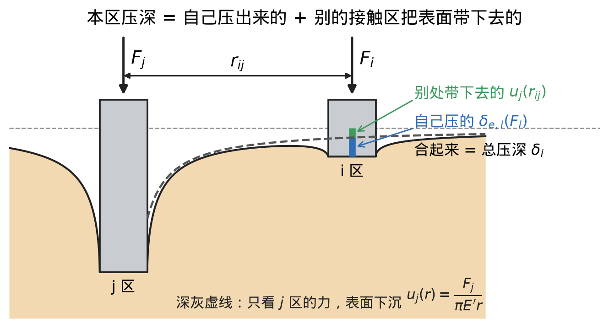
结果
刚球压平块、软硬不同的压头压块、刚球压曲面块三类，共 68 个标签。检验方法是留一法：每次拿掉一个构型，用其余的训练，再预测拿掉的那个。为了看网络到底多学到了什么，同样的检验下也比了只用骨架、以及骨架乘一个 2 参数简单公式：
| 方法 | 参数 | 误差中位数 | 最大误差 |
|---|---|---|---|
| 只用骨架 | 0 | 0.44% | 2.47% |
| 骨架 × 简单修正公式 | 2 | 0.36% | 0.98% |
| 骨架 + 网络 | 497 | 0.21% | 1.05% |
这张表说明三件事：
- 骨架本身已经很准，零点几个百分点。
- 唯一明显的规律是软压头那一组，一个 2 参数公式就能把它从 2.47% 修到 0.6%（表中 0.98% 的最大误差出在刚球压曲面块那一类）。
- 网络在典型误差上比简单公式好一截，最大误差差不多。
也就是说，在现有这些理想数据上，网络能发挥的空间不大。网络真正需要的，是公式管不到的情况，这就是第 5 节。
和 Huanyu 方案的结构差别
先把 Huanyu 的软–软模型完整讲一遍：数据怎么造、网络吃什么、吐什么、怎么变成能量和力。每一步的公式都取自他的代码。
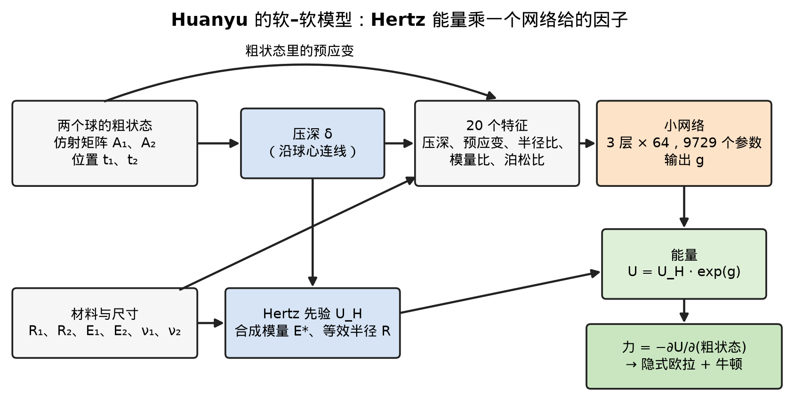
第一步：造数据。
- 两个完整的软球。球 1 半径 1、杨氏模量 \(10^5\)；球 2 的半径在 0.5 到 2 之间，模量是球 1 的 0.25 到 4 倍，两者都在对数尺度上均匀随机。两球的泊松比各自在 0.25 到 0.45 之间随机。
- 每个球先带一个小的整体变形（预应变）：6 个分量，每个不超过 0.02。这是在模拟粗模型里物体已经被整体拉伸或压缩。
- 每对球压 7 个深度，从 0.005 到 0.04。一共 60 对，按对分成 45 对训练、15 对测试。
-
标签由他自己写的求解器算。把两个球的粗状态固定住，只让局部变形去找最省能量的形状；接触用一个很硬的罚函数：
\[\color{#c0392b}{U_c=\min_{w_1,w_2}\Big[E_1(\Phi z_1+\Psi w_1)+E_2(\Phi z_2+\Psi w_2)+E_{\text{接触}}\Big]-E_1(\Phi z_1)-E_2(\Phi z_2),}\]
\[E_{\text{接触}}=\frac12\,\kappa\sum_i a_i\max(0,-d_i)^2,\qquad\kappa=10^{9}.\]
\(z_k\) 是第 \(k\) 个球的粗状态，\(\Phi z_k\) 是它给出的形状，\(\Psi w_k\) 是叠加上去的局部变形，\(E_k\) 是弹性能。\(d_i\) 是表面上一点到对方表面的距离，穿进去时为负；\(a_i\) 是这一点代表的面积。这和第 1 节「要学的量」是同一个定义，只是接触换成了罚函数。
- 预应变在没有接触时，也会通过局部变形松弛掉一部分能量。所以真正的接触标签要扣掉两个球各自无接触时的那一份：\(U=U_c-U_{0,1}-U_{0,2}\)。
第二步：从粗状态读出压深。
\[\color{#c0392b}{\delta=R_1\,\lVert\mathbf a_1\rVert+R_2\,\lVert\mathbf a_2\rVert-(x_2-x_1).}\]
两球沿球心连线（\(x\) 方向）摆放。\(\mathbf a_k\) 是球 \(k\) 仿射矩阵的第一行，\(R_k\lVert\mathbf a_k\rVert\) 是这个球被整体拉伸后沿连线方向的半宽；\(x_1\)、\(x_2\) 是两个球心沿连线的位置。所以 \(\delta\) 就是两个未变形的表面沿连线互相穿进去多少。
第三步：Hertz 先验。
\[\color{#c0392b}{\frac1{E^*}=\frac{1-\nu_1^2}{E_1}+\frac{1-\nu_2^2}{E_2},\qquad R=\frac{R_1R_2}{R_1+R_2},\qquad U_H=\frac8{15}\,E^*\sqrt R\,\delta^{5/2}.}\]
合成模量和等效半径都是两球直接代公式，\(U_H\) 就是两个球按 Hertz 算的能量（压深为负时取 0）。
第四步：网络的 20 个输入。
\[\color{#c0392b}{\mathbf f=\Big(\frac{\delta}{0.04},\ \frac{\boldsymbol\varepsilon_1}{0.02},\ \frac{\boldsymbol\varepsilon_2}{0.02},\ \ln\frac{R_2}{R_1},\ \ln\frac{E_2}{E_1},\ \nu_1,\ \nu_2,\ \ln s_1,\ \ln s_2,\ \ln s_3\Big).}\]
\(\boldsymbol\varepsilon_k\) 是球 \(k\) 的预应变，6 个分量（\(xx,yy,zz,xy,xz,yz\)）。压深除以数据里的最大压深 0.04，预应变除以它的上限 0.02，这样都落在 1 附近；半径和模量取两球之比的对数。最后 3 个 \(\ln s\) 是给椭球用的形状量（三个半轴的缩放），软–软时两边都是球，恒为 0。压深是网络的输入之一。
第五步：网络和能量。
\[\color{#c0392b}{U=U_H\cdot e^{\,g(\mathbf f)}.}\]
\(g\) 是一个 3 个隐层、每层 64 个神经元的网络（激活函数 SiLU），输入 20 个数，输出一个数。参数一共 \((20\times64+64)+2\times(64\times64+64)+(64+1)=9729\) 个。他报告的这个模型的结果，来自加上椭球那 3 项之前的版本：17 个输入、9537 个参数。\(g=0\) 时就是 Hertz，网络学的是在 Hertz 上乘多少。
第六步：训练。 用相对误差做损失，分母加上 1% 的 Hertz 能量，免得几乎没接触、能量接近 0 的样本把误差放大：
\[\color{#c0392b}{L=\operatorname{mean}\Big(\frac{U_{\text{网络}}-U_{\text{标签}}}{\lvert U_{\text{标签}}\rvert+0.01\,U_H}\Big)^2.}\]
只拟合能量，用 Adam 训练 2 万步。
第七步：用到仿真里。 每个球的粗状态是 12 个数（仿射矩阵 9 个、位置 3 个），两个球一共 24 个。每个时间步用隐式欧拉，牛顿法解「惯性 + 球自身弹性 + 接触」的平衡；接触这一项的广义力是
\[\color{#c0392b}{\mathbf Q=-\frac{\partial U}{\partial\mathbf z},}\]
\(\mathbf z\) 是这 24 个数。压深和预应变都从 \(\mathbf z\) 算出来，所以对它们求导，再沿网络自动微分，就得到力。
举个例子： 测试集里的一对球，压深取第 4 档 0.015。下表的数都是用他的代码，从他的随机种子复现这一对后算出来的。这一行的标签能量在他本地的数据里，这里没有。

| 输入 | 这一行的值 | 是什么 |
|---|---|---|
| \(\delta/0.04\) | 0.375 | 压深 0.015，除以 0.04 |
| 球 1 预应变 ÷ 0.02（\(xx,yy,zz,xy,xz,yz\)） | 0.258、0.854、−0.119、0.909、−0.0002、−0.150 | 球 1 被整体拉伸、压缩、剪切了多少 |
| 球 2 预应变 ÷ 0.02（同上顺序） | 0.240、0.990、0.898、−0.080、0.515、−0.005 | 球 2 的同一组量 |
| \(\ln(R_2/R_1)\) | −0.417 | 球 2 半径 0.659，球 1 半径 1 |
| \(\ln(E_2/E_1)\) | 1.226 | 球 2 模量 \(3.41\times10^5\)，球 1 是 \(10^5\) |
| \(\nu_1\)、\(\nu_2\) | 0.323、0.271 | 两球的泊松比 |
| \(\ln s_1,\ln s_2,\ln s_3\) | 0、0、0 | 两边都是球 |
这一行的合成模量 \(E^*=8.56\times10^4\)，等效半径 \(R=0.397\)，Hertz 先验 \(U_H=0.793\)。

之后他把软–刚也并进了同一个模型：仍是 Hertz 先验乘网络因子，但输入改成两侧各自的形状、材料和预应变，并对两个物体对调取平均。
和我的结构差别：
| Huanyu（软–软模型） | 我 | |
|---|---|---|
| 物体 | 两个完整的有限大球 | 被压的块外推到无限大 |
| 骨架 | Hertz 能量 × 网络输出的因子 | 降维法 / 椭圆 Hertz，网络只修轮廓 |
| 参数量 | 9729（他报告结果的版本 9537） | 497 |
| 压深是否输入网络 | 是：压深 ÷ 0.04 是 20 个输入之一 | 否：越压越硬由结构保证 |
| 两侧对调 | 两个球按「球 1、球 2」分别输入（球 1 固定半径 1、模量 \(10^5\)） | 两侧对调再算一遍取平均 |
| 多处接触的相互影响 | 无 | 有 |
| 有限大物体；碰撞前物体整体已被拉伸或压缩（预应变） | 有 | 无 |
两边正好互补：我的部分只看接触点附近，能跨形状推广；Huanyu 的数据里有有限大物体和预应变，正是我还没覆盖的（第 6 节第 2 条）。
下一步：一个统一的二维表达
现有骨架管不到的情况
骨架建立在「接触区远小于物体、物体可以看成无限厚、接触区是一块近椭圆」这几个前提上。下面三种常见情况违反这些前提：
① 薄层（软垫、涂层、手指皮肤）。 骨架里没有层厚这个量。刚球压一层放在硬底座上的薄软层，材料被底座挡住没处可让，比压一大块软材料硬得多；骨架仍按无限厚算，只算出真实能量的一到两成。
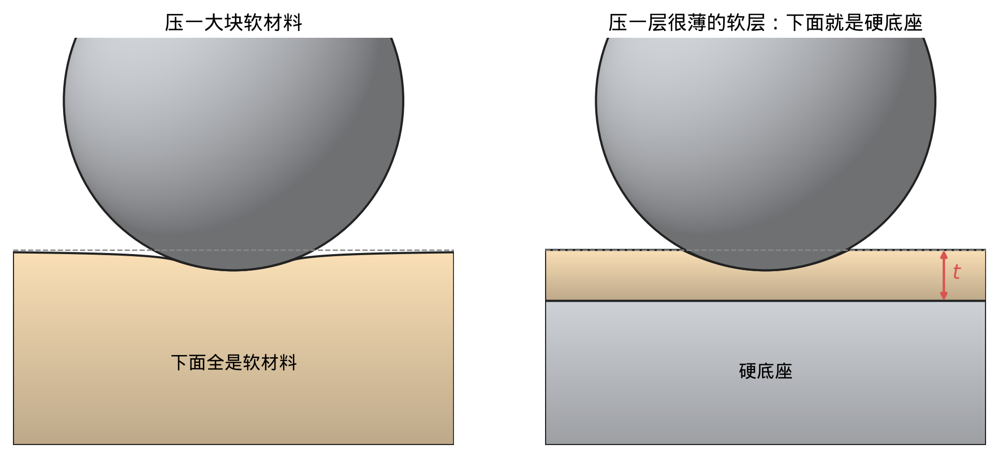
② 斜着压的平底。 骨架把接触压成左右对称的一维轮廓，只记得最深处压了多深，不知道哪一边深。结果是：少算了倾斜本身存下的能量（整片贴住时少约 15%）；而且往左倾、往右倾，骨架给出的能量变化一样，能量在「不倾斜」处出现一个尖角，对倾角求导就冒出一个本不存在的转动力矩。

③ 两处接触连成一片。 分开时按「两处 + 相互影响」算，连成一片后只能按「一处」算。两种算法在连上的那一刻差 4%–7%，能量在这里跳一下，牛顿法可能因此不收敛。
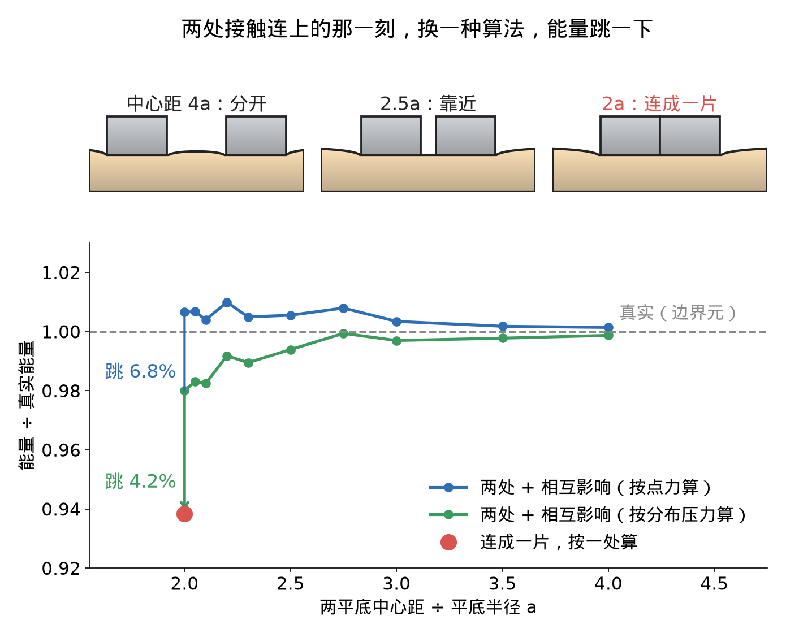
这三种情况指向同一个原因：一维骨架把接触区压成了一条线，层厚、哪边深、有几块，这些信息在压成线的时候就丢了。所以下一步不是给一维再加补丁，而是直接在接触面上算。
以薄层为例：两头精确，中间两个公式都不行
用「接触区大小 ÷ 层厚」\(\chi=\sqrt{R\delta}/t\) 表示走到了哪一头（\(R\) 是球半径，\(\delta\) 是压深，\(t\) 是层厚）：
- 很厚（\(\chi\to0\)）：Hertz 精确。
- 很薄（\(\chi\to\infty\)）：压力传不开，每一小柱材料只被竖直压扁，表面每一点是一根独立的弹簧，单位面积刚度为 \(k\)。能量 \(U=\pi kR\,\delta^3/3\)，按压深的 3 次方涨，和 Hertz 的 2.5 次方完全不同。这正是 hydro 的行为。
\(k\) 取决于底面和泊松比 \(\nu\)：
- 底面能滑： \(k=E^*/t\)，对任何 \(\nu\) 都成立。
- 底面粘住、材料可压： \(k=M/t=E^*\dfrac{(1-\nu)^2}{(1-2\nu)\,t}\)，\(M\) 是材料被侧向完全挡住时的压缩模量。多出来的倍数在 \(\nu=0.3\) 时是 1.225。粘住时材料想往旁边挤，被底面拽住，所以更硬。这个「每点一根弹簧」只在接触区比层厚宽得足够多时成立：\((a/t)^2\gg2(1-\nu)/(1-2\nu)\)，\(a\) 是接触半径；\(\nu=0.3\) 时要 \(a/t\gg1.9\)。
- 底面粘住、材料接近不可压（\(\nu\to0.5\)，橡胶一类）：不再是弹簧。体积不能变，被压下去的材料只能从层里横着挤出去，像挤牙膏；挤的阻力随层变薄急剧变大，刚度 \(\propto1/t^3\)，而且某一点的压强取决于周围一片材料往哪里流，不再只看这一点。
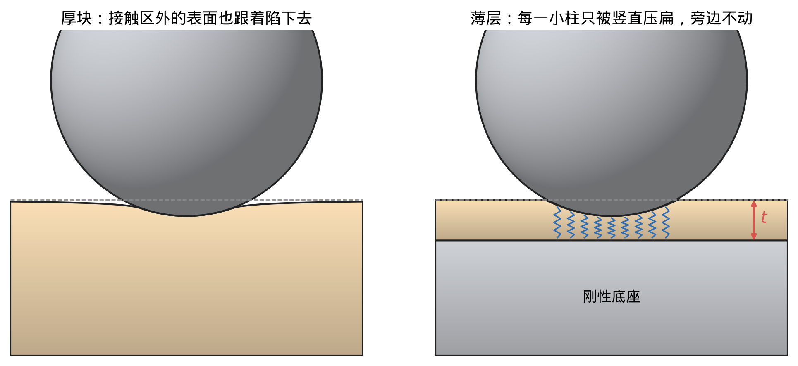
推导：薄层能量
离中心 \(r\) 处的压缩量 \(w(r)=\delta-\dfrac{r^2}{2R}\)，压强 \(p=k\,w\)，接触边缘在 \(w=0\) 处，即 \(a^2=2R\delta\)。
能量是所有弹簧储能之和，每单位面积存 \(\tfrac12k\,w^2\)，取圆环面积 \(2\pi r\,dr\)：
\[U=\int_0^a\tfrac12k\,w^2\,2\pi r\,dr.\]
令 \(u=r^2/(2R)\)，则 \(2\pi r\,dr=2\pi R\,du\)，\(u\) 从 0 到 \(\delta\)：
\[U=\pi kR\int_0^\delta(\delta-u)^2du=\frac{\pi kR\,\delta^3}{3}.\]
有限元从厚扫到薄（底面粘住，\(\nu=0.3\)）：
| 接触区 ÷ 层厚 \(\chi\) | 0.01 | 0.1 | 0.5 | 1 | 3 |
|---|---|---|---|---|---|
| Hertz 误差 | −0.7% | −7% | −36% | −60% | −86% |
| 薄层公式误差 | −98% | −78% | −23% | −4% | +0.9% |

两头各有一个公式精确，中间（\(\chi\) 在 0.3 到 0.5 之间）两个都差二三十个百分点。下面的统一表达里，厚、薄、中间由同一个式子给出，中间段不需要拟合。
统一表达
把接触面铺成边长为 \(h\) 的小方格。能量写成：
\[\color{#c0392b}{U(w)=\max_{p\ge0}\;h^2\Big[\sum_i p_i\,(w_i+\Delta_i)-\frac12\sum_{i,j}p_i\,C_{ij}\,p_j\Big]}\]
式子里有三样东西，各管一件事：
| 符号 | 是什么 | 从哪来 |
|---|---|---|
| \(w_i\) | 第 \(i\) 格的穿入深度：两个物体都不变形时，在这一格叠进去多深 | 几何，直接算 |
| \(C_{ij}\) | 第 \(j\) 格上单位压强让第 \(i\) 格表面下沉多少 | 线弹性，全部解析，不学 |
| \(\Delta_i\) | 第 \(i\) 格穿入深度的修正 | 网络，只修线弹性管不到的部分 |
另外，\(p_i\) 是第 \(i\) 格上的平均压强，是求解时的未知量；\(p\ge0\) 表示只能压、不能拉。
解出来以后：
- 有压强的格子恰好贴住，没压强的格子没贴上；
- 力不用另算：第 \(i\) 格的力是 \(h^2p_i\)，总力 \(F=h^2\sum_ip_i\)；
- 只要 \(C\) 对称正定，最优的 \(p\) 唯一；只要 \(\Delta\) 不依赖压深，\(U\) 对 \(w\) 是凸的，力是能量的导数。这两条由结构保证，不靠训练。
推导：为什么这个最大值就是弹性能，力为什么是 h²pᵢ
先看 \(\Delta=0\) 的情形，记 \(o_i=w_i\)。
- 下沉： 第 \(j\) 格上的压强在第 \(i\) 格造成的下沉是 \(C_{ij}p_j\)，各格叠加：\(u_i=\sum_jC_{ij}p_j\)。
-
接触条件： 压头处不能穿进去，只能推不能拉，两者至少一个取等号：
\[u_i\ge o_i,\qquad p_i\ge0,\qquad p_i\,(u_i-o_i)=0.\]
-
这三条正好是凸二次规划 \(\min_{p\ge0}\ \tfrac12\sum_{i,j}p_iC_{ij}p_j-\sum_ip_io_i\) 的最优条件。\(C\) 对称正定，所以最优解唯一。
- 弹性能是 ½ × 力 × 位移之和：\(U=\tfrac12h^2\sum_ip_iu_i\)。有压强的格子 \(u_i=o_i\)，没压强的格子 \(p_i=0\)，所以 \(U=\tfrac12h^2\sum_ip_io_i\)。
- 由第 2 步第三式求和，最优点处 \(\sum_{i,j}p_iC_{ij}p_j=\sum_ip_io_i\)。代回去，方括号里的式子在最优点正好等于 \(U\)；对其他 \(p\ge0\) 都不超过它。所以 \(U\) 就是这个最大值。
- 力： 最优点处 \(p\) 的微小变化不引起能量的一阶变化，所以 \(\partial U/\partial o_i=h^2p_i\)。
- 凸： 每一个固定的 \(p\ge0\) 给出一个关于 \(o\) 的线性函数，\(U\) 是这一族线性函数的最大值，所以是凸的。
- 二阶导数有台阶： 在固定的一组有压强的格子上，\(p=C^{-1}o\)，能量是 \(o\) 的二次式；每多一格进入接触，这组格子变了，二阶导数跳一下。格子越密，跳得越小，但消不掉。
加上 \(\Delta\) 后，只是把 \(o_i\) 换成 \(w_i+\Delta_i\)。只要 \(\Delta\) 不随压深变，上面每一步都不变。
算得快的原因： 当 \(C_{ij}\) 只取决于两格的相对位置时，\(\sum_jC_{ij}p_j\) 是一个卷积，用快速傅里叶变换（FFT）一次算完，代价按 \(N^2\log N\) 涨（\(N^2\) 是格子数），也不用把矩阵 \(C\) 存下来。
下面分别讲 \(C\) 和 \(\Delta\)。
相互作用 C：一个式子包含厚、薄和中间
\(C\) 分两部分：
\[C_{ij}=C^{\text{局部}}_{ij}+c_g\]
局部部分用层核。它在频域里写最简单：把表面的压强分布拆成不同疏密的起伏，用波数 \(\xi\) 表示疏密（\(\xi\) 越大越密，波长 \(=2\pi/\xi\)）。每种起伏各自产生一个下沉，下沉与压强之比是
\[\tilde C(\xi)=\frac{2}{E^*\,\xi}\,L(\xi t)\]
其中 \(t\) 是层厚，\(L\) 是一个只取决于 \(\xi t\)（波长和层厚之比）的函数，由弹性力学精确解出（粘住的式子见 Argatov 2012；能滑的式子用有限元数值验证过，文献出处还没核）：
- 底面能滑：\(L(\lambda)=\dfrac{\cosh2\lambda-1}{\sinh2\lambda+2\lambda}\)；
- 底面粘住：\(L(\lambda)=\dfrac{2\kappa\sinh2\lambda-4\lambda}{2\kappa\cosh2\lambda+1+\kappa^2+4\lambda^2}\)，其中 \(\kappa=3-4\nu\)。
这个式子在两头自动退回两个精确公式：
- 很密的起伏（波长远小于层厚，\(\xi t\to\infty\)）：\(L\to1\)，\(\tilde C=2/(E^*\xi)\)，这就是半空间的 Boussinesq 解，也就是现在骨架那一头。
- 很疏的起伏（波长远大于层厚，\(\xi t\to0\)）：\(\tilde C\to1/k\)，与波长无关，即每点一根独立弹簧，就是薄层那一头。底面能滑时 \(k=E^*/t\)，粘住时 \(k=E^*(1-\nu)^2/((1-2\nu)t)\)，和 5.2 节的两个 \(k\) 完全一致。
接触区的大小决定了哪种疏密的起伏起主导：接触区小，主要是密的起伏，表现得像厚物体；接触区大，主要是疏的起伏，表现得像薄层。中间那段，层核给出的就是线弹性的精确解，不需要拟合。

推导：层核的两个极限
记 \(\lambda=\xi t\)。
\(\lambda\to\infty\)： 两种底面条件下，分子分母都由 \(e^{2\lambda}\) 项主导：能滑时 \(L\approx\dfrac{e^{2\lambda}/2}{e^{2\lambda}/2}=1\)；粘住时 \(L\approx\dfrac{2\kappa\cdot e^{2\lambda}/2}{2\kappa\cdot e^{2\lambda}/2}=1\)。
\(\lambda\to0\)，底面能滑： \(\cosh2\lambda-1\approx2\lambda^2\)，\(\sinh2\lambda+2\lambda\approx4\lambda\)，所以 \(L\approx\lambda/2\)。代入：
\[\tilde C\approx\frac{2}{E^*\xi}\cdot\frac{\xi t}{2}=\frac{t}{E^*}=\frac1k,\qquad k=\frac{E^*}{t}.\]
\(\lambda\to0\)，底面粘住： 分子 \(\approx4\lambda(\kappa-1)\)，分母 \(\approx(\kappa+1)^2\)。用 \(\kappa-1=2(1-2\nu)\)、\(\kappa+1=4(1-\nu)\)：
\[L\approx\frac{\lambda(1-2\nu)}{2(1-\nu)^2},\qquad \tilde C\approx\frac{t\,(1-2\nu)}{E^*(1-\nu)^2}=\frac1k.\]
接近不可压缩的粘结层也包含在内。 \(\nu\to0.5\) 时，上面粘住那一式的主导项 \((1-2\nu)\) 趋于 0，下一阶的项开始起主导：材料只能沿着层往外挤，某一点的下沉取决于周围一大片材料往哪里流，不再是独立弹簧，这就是 5.2 节的「挤牙膏」。层核把这一段也自动包含了，不需要单独处理。
整体部分 \(c_g\) 对所有格子对都一样，相当于 \(C\) 上加了一个各元素都相等的矩阵。它的意思是：有限大的物体除了接触处局部凹陷，整个物体还会被压短一点，所有格子一起往下沉。这一项只取决于物体自己的形状，由有限元对每种形状预先算好。直接用杆的公式 \(H/(E\pi R^2)\)（\(H\) 是高，\(R\) 是半径）会修过头，有限元给出的比值随高宽比变化：
| 高 ÷ 半径（\(\nu=0.3\)） | ≤0.5 | 1 | 2 | 3 | 5 | 10 |
|---|---|---|---|---|---|---|
| \(c_g\) ÷ 杆公式 | ≈0 | 0.13 | 0.35 | 0.50 | 0.66 | 0.82 |
参数从哪来： 层厚 \(t\)、泊松比 \(\nu\)、底面粘住还是能滑，都是输入，不是拟合出来的。要诚实说明的一点：层核是平板的精确解，真实物体不是平板。\(t\) 从几何上定，比如在接触点沿法向往物体里走，到底座或物体另一侧的距离。如果以后数据表明一个 \(t\) 不够描述，再考虑让网络修 \(C\)；在有证据之前不加。之前 v2 里试过让网络学一个等效层厚，学出来的只比几何层厚薄约 2%，方向还和预想的相反；去掉以后误差最多只变 0.06 个百分点，所以去掉了。
网络修正 Δ：只修线弹性管不到的部分（设计，未验证）
\(C\) 是线弹性的。线弹性管不到的效应，比如大变形、软的一侧是弯面时圆弧被压平（第 3.4 节软压头那种），由 \(\Delta\) 负责。
形式：把穿入深度写成 \(w_i=\delta-s_i\)，\(\delta\) 是两物体最近点处的名义压深，\(s_i\) 是不变形时第 \(i\) 格两表面比最近点多隔开的距离（最先接触的点 \(s=0\)）。网络在每格输出一个数 \(\psi_i\)，修正后的穿入深度为
\[w_i+\Delta_i=\delta-m_i\,s_i,\qquad m_i=e^{\psi_i}>0.\]
也就是把两表面之间的缝隙按格子乘一个正数，缝隙变大一点或变小一点。这是一维「轮廓斜率乘正数」在二维的对应：一维靠「从中心往外积分」，需要先有一个中心；多块接触没有统一的中心，所以二维改为直接乘在缝隙高度上。
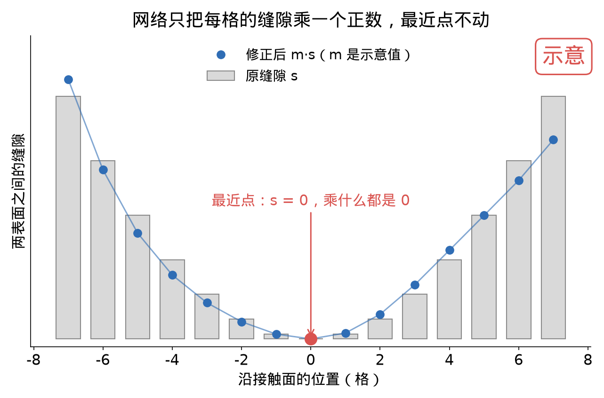
这个形式保证三件事：
- 浅压时退回线弹性： 最先接触的点 \(s=0\)，修正为 0。压得越浅，接触区里的 \(s\) 越小，修正越小。这和物理一致：大变形、圆弧被压平这些效应都随压深变浅而消失。
- 凸性和唯一解： \(\psi_i\) 只看这一格的几何和材料（两侧曲率、软度占比、泊松比、层厚），不看压深 \(\delta\)，所以修正不随压深变，5.3 节的结论都成立。
- 缝隙不会变成负的： \(m_i>0\)，原来分开的地方修正后仍然分开。
能不能直接用文献里的修正公式： 今天查了文献里的大变形修正（Tatara 一类）。几何和我们相同的那几种（刚球压软半空间），在我们的压深范围里比要修的量小 3–40 倍；量级相当的 Tatara 一类描述的是整球压平板，几何不同；而且所有这些修正的方向都和我们要修的相反。所以不能直接套，最多给网络的输入提个醒（修正大约是 \(\delta/R\) 的一阶）。
还没定的一点：多块接触时，\(s\) 从全局最近点量起，还是从每块各自的最近点量起。前者简单，但第二块接触刚碰上时修正不为 0；后者需要把缝隙图分块，分块的边界可能引入不连续。
一维的补丁在二维里变成什么
| 一维里的做法 | 为什么需要 | 二维里 |
|---|---|---|
| 椭圆乘扁度因子 \(F_U\) | 一维只能描述圆 | 不需要，任意形状直接算 |
| 薄层查表 \(\Phi(\chi)\) | 一维表达不了层的牵连 | 不需要，层核 \(C\) 精确包含 |
| 多块接触另加 \(1/\)距离 项 | 一维只能描述一块 | 不需要，所有格子在同一个 \(C\) 里 |
| 「两处」和「一处」之间切换 | 同上 | 不需要，合并时能量自然连续 |
| 方向排序（第 3.4 节） | 一维要区分两个主方向 | 不需要，格子沿主方向铺，转角不改能量 |
| 网络乘轮廓斜率 | 修大变形 | 网络乘每格缝隙（5.3 节「网络修正 Δ」） |
| 整体柔度 \(c_g\) | 有限大物体 | 保留，作为 \(C\) 的整体部分 |
一维降维法作为轴对称的验证：轴对称和椭圆情形，二维必须和它对上。轴对称要不要走一维快路径，看速度实测再定；保留的话，一维和二维之间的切换问题会重新出现，所以只是备选。
验证到哪
每一级只往前推一步，前一级不过，后面不做。每一级的判据都在跑之前写定。
格子怎么铺
格子边长定为
\[h=\frac{\sqrt{R_{\min}\,\hat d}}{4}\]
- \(\hat d\) 是 IPC 屏障开始起作用的距离。比它更浅的尺度，IPC 自己也分辨不了，所以从压深 \(\hat d\) 开始要求精度。
- \(R_{\min}\) 是两表面合起来最弯那个方向的曲率半径。压深为 \(\hat d\) 时，那个方向的接触半轴约为 \(\sqrt{R_{\min}\hat d}\)，上面放 4 格。
- 格子大小在接触开始时定死，不随压深变：格子一变，离散误差就变，能量会跳。铺多大的范围可以随接触变大往外扩，外圈的格子压强为 0，不影响能量（实测扩展前后相对差不超过 \(7\times10^{-16}\)，就是机器精度）。
- 格子沿两个主弯曲方向铺。
还没定：平面接触 \(R_{\min}\to\infty\) 时这条规则会给出无限大的格子，需要再加一个上限，由 6.5 节平头的结果决定。
① 能量和力连续，误差随加密收敛
刚球压半空间，压深从接触刚出现连续加到最大：
- 能量和力连续，二阶导数有台阶，格子加倍，台阶缩到约 1/4；
- 对 Hertz 精确解的误差按约 2 阶下降（实测 1.9），接触半径上有 4 格以上时误差在 0.5% 以内；
- 球沿表面横向挪动不到一格时，能量起伏和虚假横向力都可以忽略（每半径 6.4 格以上时，横向力不到压力的 \(3\times10^{-5}\)）；
- 牛顿法每个载荷步 2–5 次求值，不比一维多。

② 圆和椭圆对上一维
圆和三种扁度的椭圆（两个方向曲率差 2、3、4 倍），短半轴上有 13 格以上时，二维结果和一维降维法乘扁度因子的结果相差都在 0.06% 以内。格子沿主弯曲方向铺时，接触在平面里转任何角度都不改能量。
这一级的意义是：二维实现本身没有错，而且在一维精确的地方和一维一致。

③ 多块接触
离得远的两块： 两个球同时压同一块平面。二维算出的两块之间的相互影响能，随间距增大收敛到半空间的解析主导项 \(-F_1F_2/(\pi E^*r)\)（\(F_1,F_2\) 是两块的力，\(r\) 是间距），间距每翻一倍偏差减半，间距是接触半径的 64 倍时只差 1%。格子再加密，结果几乎不变。说明格子之间的牵连算对了。

两块合并： 两个凸起越压越深、越靠越近，最后连成一片。跨过合并的那一刻，能量和力都连续，只有二阶导数有一个约 0.4% 的台阶。用牛顿法一步步压过去，每步 3–4 次求值，跨过合并的那一步也是 4 次。这是一维做不到的，也是 5.1 节第 ③ 条的答案。

尖边：平头冲头暴露的问题
平底压头的边是直角，边缘处的压强理论上是无穷大。用刚性平头冲头压半空间检验，它有精确解：力 \(F=2aE^*\delta\)，能量 \(U=aE^*\delta^2\)（\(a\) 是冲头半径）。
结果：误差只按「1 / 格数」下降（实测阶 0.99），不是光滑形状的 2 阶。冲头直径上约 45 格时误差约 1%，要到 0.5% 要约 91 格（暂定，未冻结）；而球在最浅压深时每半径 4 格就够。尖边会把速度优势吃掉，所以必须专门处理。
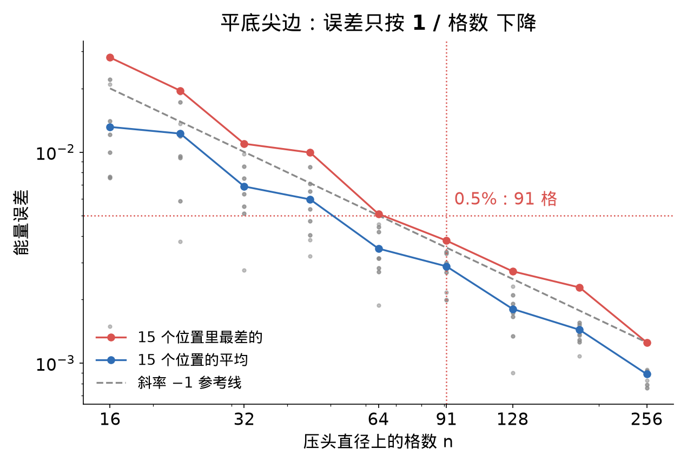
试过按覆盖比例算，不够。 「覆盖比例」是指：边缘上的格子，被冲头盖住多少比例就按多少计入，而不是按格心在不在冲头里算 0 或 1。结果：
- 冲头放在格子里不同位置时的能量起伏降到原来的 0.2–0.5 倍；
- 但它自身的系统偏差反而更大：91 格时平均偏小约 1.4%，按格心算只偏小约 0.3%；
- 冲头沿表面滑动时出现虚假的横向力，约为压力的 0.3%–0.9%，两种算法都有；同样的检查在球上不到 0.003%。
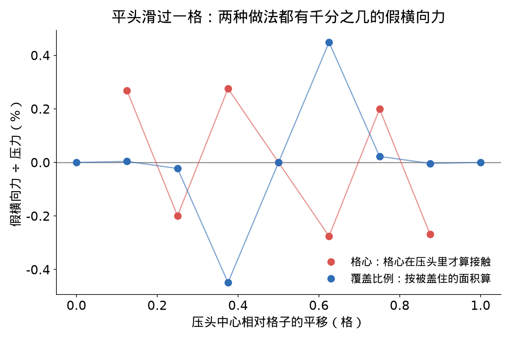
试过在边缘补 1/√ 解析修正，也不成立。 尖边附近压强的形状已知（按 1/√到边缘的距离 发散），想法是把这一部分用解析式补上，格子只负责剩下的光滑部分。结果补偿后每一档的误差都更大：从格子解里拟合出的奇异强度 \(K\) 比精确值偏大 3%–5%，补多了。
怎么定：
- 今晚： 尖边的格子数按 91 格暂定，不改。
- 会后： 把尖边按 \(\hat d\) 量级圆角化。真实物体的边总有一点圆角，而且 IPC 在 \(\hat d\) 以下的尺度本来就分辨不了；圆角化后奇异性消失，格子需求应大幅下降。参照解用一维降维法对圆角平头的剖面做数值积分（轴对称下精确），再用 Ciavarella 1998 的圆角平头解析解作第二道核对。
还没做的
- 月牙形接触（斜压很浅时）：接触区又窄又长，需要很细的格子。参考解用二维自身多档加密外推（以四档版为准），参考本身的不确定度约 0.06%；按规则铺的格子和两档外推对它都在判据以内。独立的边界元参照仅一行（s = 0.25）算到足够细（每半径 182 格），在该行两者相差约 0.1%。（\(s\) 越小压得越浅、月牙越窄，0.25 是最浅的一档；其余几行的边界元只算到每半径 64 格，不够细，不拿来比。）
- 薄层和整体柔度在二维里的验证：层核在一维已经对过有限元（\(\nu=0.3\)、\(\chi=1\) 处差不到 0.05%），搬到二维、加上 \(c_g\) 以后还没验证。
- 网络 \(\Delta\)：还没实现，5.3 节里写的形式待定。
为什么原理上比 IPC + FEM 快
前提： 物体整体较硬，变形集中在接触附近（接触区比物体小得多）。这时物体本身用很少的自由度描述（比如仿射体只有 12 个），接触处的局部变形交给上面的模型。如果整个物体都在大幅弯曲、扭转（很软的长条、布料），这个前提不成立，仍要用 FEM。
IPC + FEM 慢在哪里：
- 细的是体网格： 要把接触区的变形算准，接触面下面一个深度约等于接触尺寸的体积都要一起加密，未知量随分辨率按三次方涨。我们造标签用的中等网格就有约 11.5 万个节点。
- 事先不知道哪里会接触： 只能整个表面都加密，或者中途重新剖分网格。
- 全局耦合： 所有节点在一个大方程组里一起解，接触越多方程组越大；物体越硬方程越病态，牛顿法越难收敛。
我们快在哪里：
- 只在接触面上算： 未知量是一张 \(N\times N\) 的图，用 FFT，代价按 \(N^2\log N\) 涨，而不是 \(N^3\)。
- 局部、独立： 每个接触的小问题各自求解，天然并行；解完压缩成物体自由度上的一个小块，全局方程组的大小只取决于物体数量。
- 哪里接触就在哪里铺格子： 不需要事先加密，也不用重新剖分。
- 热启动： 上一步的压强直接当这一步的起点，外层迭代降到约 1/3，内层降到约 1/5–1/4。
口径： 上面比较的是单个接触区的计算量和 FEM 整个系统的一个牛顿步。网络还没接进引擎，端到端的速度对比现在做不了；目前先做准确率。尖边（6.5 节）是唯一可能吃掉这个优势的地方。
已知局限和在跑的检查
这套表达管到哪里。 范围是无摩擦的法向接触；摩擦、粘附、粘弹性不在范围内。
| 类别 | 情形 |
|---|---|
| 成立 | 形状任意、不轴对称；多块接触和合并；平板层 |
| 近似 | 有限大的一般物体：局部层核 + 整体模式 |
| 不成立或待解决 | 靠近棱边；共形接触；大变形（由 \(\Delta\) 修） |
| 未测 | 圆锥；圆角平头；倾斜平头的力矩；二维层核（平板层的两个极限、不可压缩薄层）——二维层核还没实现 |
- \(C\) 里的整体部分只放「真实的整体柔度 − 粗模型（仿射体）已经给出的那部分」。这个差值要实测，不是简单把 \(c_g\) 删掉。
- 靠近棱边的修正一般不是低秩的，加进去以后 \(C\) 不再只看两格的相对位置，FFT 就用不上了。
具体几条：
- 尖边： 见 6.5 节，今晚 91 格暂定；会后做圆角化。
- 月牙： 见 6.6 节。
- 泊松比： 现有一维网络只在 \(\nu=0.3\) 上训练过，换成橡胶这类接近 0.5 的材料是外推。敏感度实验的设计：两组构型，\(\nu=0.1/0.3/0.45\)，看修正量变化是否超过 0.3%；超过就补数据，否则去掉这个输入。跑之前先确认有限元在 \(\nu=0.45\) 下没有体积锁定：IPC 有限元这一关没过（小压深下能量 ÷ Hertz，\(\nu=0.45\) 比 \(\nu=0.3\) 高 0.434%，限 0.3%），所以另做了一个独立的 F-bar 有限元参照（这种单元不会体积锁定）。初步结果（F-bar 在压深 0.001 下尚未收敛，块尺寸 4.8、9.6 两档加密到 nr1024 补跑中，10-26 16:52 起）把两件事分开了：
- F-bar 显示 \(\nu=0.45\) 比 \(\nu=0.3\) 低约 0.24%。这个差在块尺寸外推到无限大以后仍然存在；它来自泊松比本身还是大变形，要等压深 0.001 的补跑结果。
- IPC 是高 0.434%，方向相反；两者的差可能来自线性四面体的体积锁定。
- 标签的尺寸外推： 现有标签里做了尺寸外推的那部分，外推到无限大块时只用了两档块尺寸，并假定误差与 1/块尺寸 成正比。这个假定有理论依据（半空间表面下陷按 1/距离 衰减），但从没实测过。第三档尺寸已排进计划，因为 ν 的锁定检查暂停，还没跑。
- 一维网络的方向排序： 两个主方向按大小排序，十字交叉的圆柱跨过排序翻转点时能量跳 0.73%。现有数据碰不到翻转点，所以不影响已有结果；二维里没有这个问题（5.4 节）。
- 层厚 \(t\) 的取法： 层核是平板近似，真实物体上 \(t\) 怎么从几何定，还要验证（5.3 节「相互作用 C」）。
想讨论的
- 方向： 把骨架从「一维降维法」换成 5.3 节的统一二维表达，作为下一阶段主线，是否合适？
-
精度和速度怎么兼顾（老师 / 学生）： 精度靠 5.3 节的统一式子。二维在细格子下目前是秒级；如果仿真时这个速度不够，就把二维求解器当「老师」，批量造标签，训练一个「二维等效轮廓 + 独立弹簧」的快速模型当「学生」，运行时不用解方程。学生能做到哪一步，现在的判断是：
- 几块接触之间的相互影响： 如果等效轮廓只由形状决定（看不到各块各压了多深），学生表示不出相互影响。这和一维降维法是同一个局限，v1 因此另加了 1/距离 一项。一个开放的方向是：让换算 \(T\) 作用在整张穿入深度图 \(w\) 上，做一个线性、非局部的变换。全部格子都接触时取 \(T=C^{-1/2}\)，就有 \(\tfrac12|Tw|^2=\tfrac12w^{\mathsf T}C^{-1}w\)，交叉项精确、能量仍然是凸的。但 \(T\) 只有在全部接触时才精确：用 \((Tw)_+\)（把负值截成 0）定出来的接触区，一般和真实接触区不一样，而接触区随压深变化正是 Hertz 非线性的主要来源。这一条还是开放问题。
- 单块斜压（含月牙）： 不排除，要测。单个压头时，每格的穿入深度已经同时含有压深 \(\delta\) 和倾角 \(\theta\)；等效轮廓 \(G\) 也不限于圆盘，比如同样面积的圆环转动刚度更高。所以固定的 \(G\) 能不能同时对上法向刚度和力矩（包括部分接触的月牙），要靠测试。
- 最小验证顺序： 轴对称、椭圆 → 斜压平头（含月牙）→ 两块接触。判据里除了能量和力，还要加交叉刚度 \(\partial F_1/\partial\delta_2\) 和倾斜力矩。
这条路要不要走、什么时候走？
-
尖边的精度要求： 平头这类尖边，0.5% 是否必要？把尖边按 \(\hat d\) 量级圆角化，物理上能否接受？
- 有限大物体： \(c_g\) 只取决于物体自己的形状，可以对每种物体预先算好。能否用 Huanyu 的有限大球数据检验这一项？
- 速度对标： 以后用哪些方法、哪些场景当基线？（目前先做准确率）
- 优先级： 先把模型接进 libuipc 跑通动力学，还是先完成 6.6 节的验证？